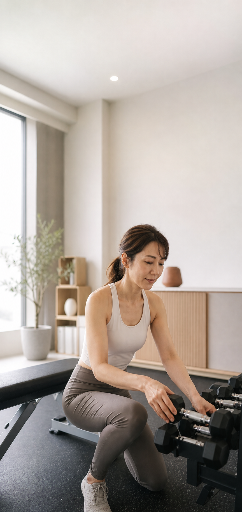

オープン記念キャンペーン
先着10名様限定
6月30日までに見学された方限定
人目を気にせず、自分のペースで使える完全予約制・貸切型24時間ジム。
1人でも、家族・友人・パートナーと一緒でも利用できます。
いますぐ見学予約をするお悩み
こんなお悩みありませんか？
人目が気になって集中できない
周りの視線が気になって、フォームや体型を見られている気がしてしまう。
混んでいるジムが苦手
使いたい器具が空いていなかったり、周りに気を使って思うように運動できない。
自分のペースで運動したい
急かされず、見られすぎず、自分のペースで運動を続けたい。
パーソナルは少し気が引ける
毎回マンツーマンで教えてもらうのは緊張する。けれど、普通のジムだと続きにくい。
1人だと続けにくい
1人でジムに行くのは不安。家族や友人、パートナーと一緒なら続けられそう。
いつでも行けるジムだと後回しになる
24時間ジムに入ったけど、「今日はいいか」となって結局行かなくなった。
サービス内容
予約して使う、
貸切型の24時間セルフジム
行徳ジム２４は、空き枠から利用したい時間を予約して使う、完全予約制のセルフジムです。
普通の24時間ジムのように、誰でも自由に出入りして同時に使う形式ではありません。予約した時間は貸切で利用できるため、人目や混雑を気にせず、自分のペースで運動できます。
また、使う時間を先に予約することで、運動が予定になります。「いつでも行ける」と後回しになりやすい方でも、予約することで運動を生活の中に入れやすくなります。
1回60分枠
利用50分＋入替10分
完全予約制
貸切利用
空き枠から予約
セルフジムのみ利用OK
選ばれる理由
行徳ジム２４が
選ばれる理由
人目を気にせず使える
予約した時間は貸切利用。周りの視線を気にせず、自分のペースで運動できます。
予約制だから運動が予定になる
使う時間を先に予約することで、運動が予定に入ります。後回しになりやすい方でも、続けるきっかけを作りやすくなります。
家族・友人・パートナーと使える
ファミリープランなら、一緒に利用することも、月の利用回数をシェアして使うことも可能です。
セミパーソナルも選べる
フォームを見てほしい方にはセミパーソナルもあります。自分に合った使い方を選べます。
比較
通常の24時間ジム・
パーソナルジムとの違い
行徳ジム２４は、一般的な24時間ジムとパーソナルジムの中間にある、新しい使い方のジムです。
利用方法
- 行徳ジム２４
- 空き枠から予約して、貸切で利用
- 一般的な24時間ジム
- 好きな時間に自由に利用
- パーソナルジム
- 予約した時間にトレーナーから指導を受ける
人目、混雑
- 行徳ジム２４
- 他の利用者と重ならないため、人目や混雑を気にしにくい
- 一般的な24時間ジム
- 他の利用者と同じ空間で使うため、混雑や視線が気になることがある
- パーソナルジム
- 人目は気になりにくいが、トレーナーとの1対1が基本
継続しやすさ
- 行徳ジム２４
- 使う時間を予約するため、運動が予定になりやすい
- 一般的な24時間ジム
- 自由度が高い反面、後回しになりやすい
- パーソナルジム
- 予約制で続けやすいが、費用は高くなりやすい
指導
- 行徳ジム２４
- 毎回の指導はなし。自分のペースで利用
- 一般的な24時間ジム
- 基本的に指導なし
- パーソナルジム
- 毎回トレーナーが指導
価格感
- 行徳ジム２４
- 月9,800円〜。貸切利用としては通いやすい価格
- 一般的な24時間ジム
- 比較的安い
- パーソナルジム
- 高め
向いている人
- 行徳ジム２４
- 人目を気にせず、自分のペースで運動したい方
- 一般的な24時間ジム
- 人目や混雑が気にならず、自分で継続できる方
- パーソナルジム
- 毎回フォームやメニューを見てもらいたい方
行徳ジム２４は、安さだけを重視するジムではありません。人目を気にせず使える貸切空間と、予約制による通いやすさを重視したジムです。
料金
料金プラン
1人で使うならベーシックプラン。家族・友人・パートナーと使うならファミリープラン。
オープン記念キャンペーン！
先着10名様限定
初月会費0円
入会金0円
6月30日までに見学された方限定
2ヶ月目以降は通常月額料金となります。
ベーシックプラン
本人1名で利用したい方向け
月4回プラン
月4回通常月額 9,800円
オープン記念初月 0円
2ヶ月目以降 9,800円
月8回プラン
月8回通常月額 14,800円
オープン記念初月 0円
2ヶ月目以降 14,800円
ファミリープラン
家族・友人・夫婦・パートナーと使いたい方向け
ファミリープランは、一緒に利用も回数シェアも可能です。
一緒に利用OK
回数シェアOK
月4回ファミリープラン
月4回通常月額 10,800円
オープン記念初月 0円
2ヶ月目以降 10,800円
月8回ファミリープラン
月8回通常月額 15,800円
オープン記念初月 0円
2ヶ月目以降 15,800円
利用時間
ご利用可能時間
下記の時間帯から、空き枠を予約してご利用いただけます。既存レッスンと重ならないよう、前後30分の余裕を空けています。
| 曜日 | ご利用可能時間 |
|---|---|
| 月曜 | 0:00〜8:30 / 10:10〜18:00 / 22:10〜24:00 |
| 火曜 | 0:00〜8:30 / 10:10〜12:00 / 13:40〜18:00 / 22:10〜24:00 |
| 水曜 | 0:00〜18:00 / 22:10〜24:00 |
| 木曜 | 0:00〜11:30 / 13:10〜20:15 / 21:55〜24:00 |
| 金曜 | 0:00〜18:00 / 22:10〜24:00 |
| 土曜 | 0:00〜7:40 / 13:40〜24:00 |
| 日曜 | 0:00〜7:40 / 13:40〜24:00 |
| 祝日 | 0:00〜7:40 / 13:40〜24:00 |
上記の時間帯が、行徳ジム２４の予約対象時間です。予約は空き枠制のため、希望時間にすでに予約が入っている場合は、別時間での利用となります。
ご利用はかんたんです。契約後は、空いている時間を選んで予約し、予約した時間に貸切でご利用いただけます。
ご利用の流れ
ご利用の流れ
見学予約
まずは「いますぐ見学予約をする」ボタンから見学予約をしてください。
見学・施設案内
実際のジム内をご案内し、セルフジムの使い方、予約方法、料金プランをご説明します。
契約・お支払い
プランを選び、契約とお支払いを行います。
利用開始
空き枠から利用したい時間を予約し、1回60分枠で貸切利用できます。利用時間は50分、入替時間は10分です。
よくある質問
よくある質問
セミパーソナル会員でなくても使えますか？
はい。行徳ジム２４は、セミパーソナル会員でない方でも利用できます。セルフジムのみのご契約も可能です。
予約なしで自由に使えますか？
いいえ。完全予約制です。空き枠から利用したい時間を予約してご利用いただきます。
24時間いつでも使えますか？
24時間の空き枠から予約できます。ただし、セミパーソナル・ヨガの実施時間、すでに他の予約が入っている時間は利用できません。
家族や友人と一緒に使えますか？
はい。ファミリープランでは、家族・友人・夫婦・パートナーと一緒に利用できます。また、同じ時間に一緒に使うことも、月の利用回数をシェアして別々に使うことも可能です。
ベーシックプランとファミリープランの違いは何ですか？
ベーシックプランは、本人1名で利用するプランです。ファミリープランは、家族・友人・夫婦・パートナーと一緒に利用したり、月の回数をシェアしたりできるプランです。
月4回や月8回を使い切れなかった場合、翌月に繰り越せますか？
いいえ。未消化分の翌月繰越はできません。
トレーナーの指導はありますか？
行徳ジム２４は、完全セルフ利用のサービスです。毎回のトレーニング指導はありません。フォームやメニューを見てもらいたい方には、セミパーソナルジムがおすすめです。
女性専用ですか？
いいえ。女性専用ではありません。男女問わずご利用いただけます。
1回の利用時間は何分ですか？
1回60分枠です。利用時間は50分、入替時間は10分です。
一般的な24時間ジムとは何が違いますか？
一般的な24時間ジムは、他の利用者と同じ空間で自由に使う形式です。行徳ジム２４は、空き枠から予約して貸切で利用する完全予約制のセルフジムです。人目や混雑を気にせず、自分のペースで使える点が違います。
パーソナルジムとは何が違いますか？
パーソナルジムは、トレーナーから毎回マンツーマンで指導を受ける形式です。行徳ジム２４は、トレーナーによる毎回の指導はありません。その代わり、貸切空間を自分のペースで使えるため、マンツーマンが苦手な方や、人目を気にせず運動したい方に向いています。
見学予約
人目を気にせず、
自分のペースで運動を始めませんか？
行徳ジム２４は、完全予約制・貸切型のセルフジムです。
普通の24時間ジムが合わなかった方でも、人目を気にせず、予約した時間に自分のペースで運動できます。
1人でも、家族・友人・パートナーと一緒でも利用可能です。まずは見学で、実際の施設や使い方をご確認ください。
いますぐ見学予約をする